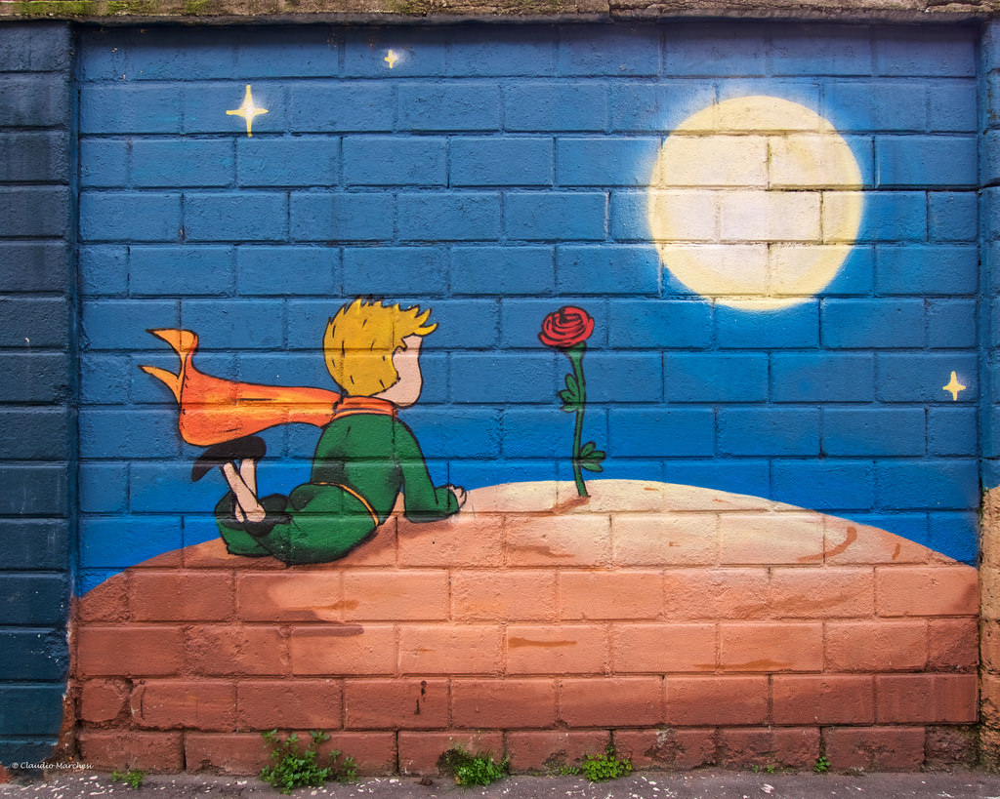
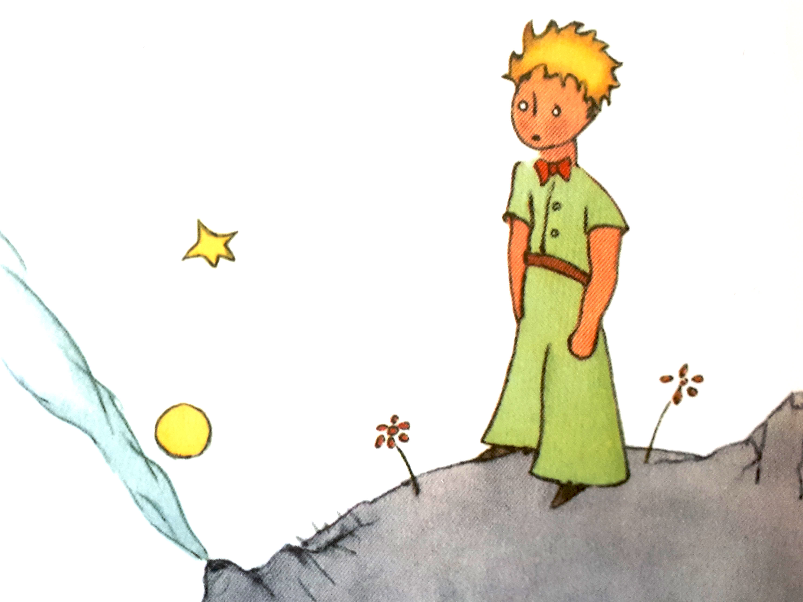

Scritto il 4 Febbraio 2020
“L'essentiel est invisible pour yeux”
Antoine de Saint-Exupéry
Consiglio una passeggiata dalla stazione di Garibaldi, passando per Piazza Gae Aulenti. Liberate la mente dai pensieri camminando nel parco Libreria degli alberi e illudetevi per un attimo di essere finiti fuori dalla città. Concludete questo piccolo tour in Via Angelo della Pergola 12, proprio lì dove una luna e un principe con la sua rosa sul suo pianeta vi stanno aspettando.

Nonostante la rivalità atavica tra Italia e Francia (culinaria, calcistica e chi più ne ha ne metta), Milano non ha potuto resistere alla tentazione di colorare uno dei suoi muri con illustrazioni de Le petit Prince, un eterno capolavoro letterario di una tenerezza e profondità sbalorditiva.
E io che adoro le cose belle anche se scontate e banali (e non mi vergogno a dirlo) non potevo che iniziare il mio articolo con una citazione come questa:
“L’essenziale è invisibile agli occhi”.
Sentita e risentita, ma sorprendentemente vera nella sua semplicità.
Milano di invisibile non ha più niente ormai. Si pensi soltanto ai suoi grattacieli, alla settimana della moda, costellata di personaggi che definirli appariscenti sarebbe riduttivo, e agli abeti, che nel periodo di Natale fanno a gara nelle piazze a chi è più grande, luminoso e vistoso. Insomma, Milano appaga molto bene da sempre il senso della vista dei suoi cittadini e sempre lo farà.

Ma chi parla sussurrando nelle strade e nelle vie, la vera voce di Milano, quando meno ce lo aspettiamo, ci vuole ricordare altro, ci vuole mostrare la sua visione del mondo.
Proprio in una via del quartiere Isola, emblema della Milano moderna, trovano posto murales di tre famose scene del capolavoro di Saint-Exupery a dirci che nonostante l’urbanizzazione, nonostante l’evoluzione, nonostante il progresso ciò che conta rimane invisibile agli occhi.
Una celebrazione alla vita vissuta “live”, alle relazioni e all’amicizia che potrebbe riempire anche la tua giornata di good vibes.
Molti di voi, tornati a casa, avranno voglia di riprendere in mano quel libricino.
Ecco, fatelo! Rileggetelo per scoprire se magari ha altro da dirvi ora.
Se invece rileggere non fa per voi, fidatevi che non sarà stato vano il vostro camminare. Avrete infatti comunque una foto artistica da aggiungere al vostro profilo Instagram.